해외선물 - 선물 스캘핑을 시작하기전에 해야할 일 몇가지
오늘은 일요일 오후 3시에 장이 오픈하는 날
늦은 점심으로 4시나 되어서 시작함
선물 스캘핑을 시작하기전에 해야할 일 몇가지
일단 어제의 일봉을 확인
첫번째 확인사항 - 일봉챠트와 내일의 경제지표
일봉챠트상으로 보면 캔들패턴이나 중요 지지(저항)선 볼린저밴드등같은 것으로
오늘의 진행 방향을 대강은 짚어볼 수 있다
예를 들어 어제 긴 장대봉이 나왔으면 오늘은 초반에는 약간의 반등을 시도할것이라든지
중요 이평선에 닿았거나 볼린저밴드 밖으로 심하게 나왔다 들어갔으면 초반장은 반등시도가 올거라는 정도..
또는 캔들 패턴상 도지라든지 장악형이라든지 긴꼬리 망치라든지 떴으면 패턴대로 갈 준비를 하고 들어갑니다
오늘의 일봉 그리고 내일 아침 주요 경제지표뉴스
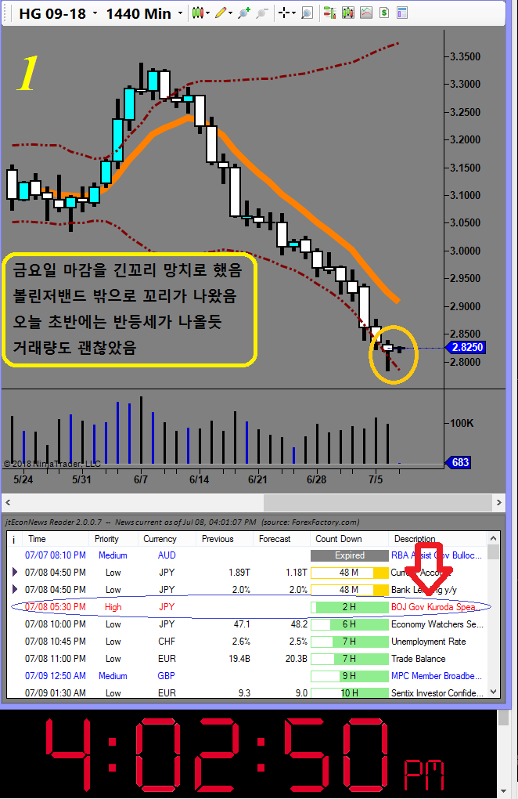
내일 아침 뱅크오브재팬의 구로다상이 한말씀 하신다는 뉴스밖에는 별거 없음..
일봉상으로 보면 어제 긴꼬리 망치가 나오면서 볼린저밴드 바깥쪽으로 긴꼬리가 나왔다 들어갔기 때문에 시작장에서 잠깐이나마 상승할것으로 보임
캔들 몸통 깨고 올라가면 반등이고 아니면 또 다시 하락일것임
두번째 확인 사항
현재 선물시장 상황
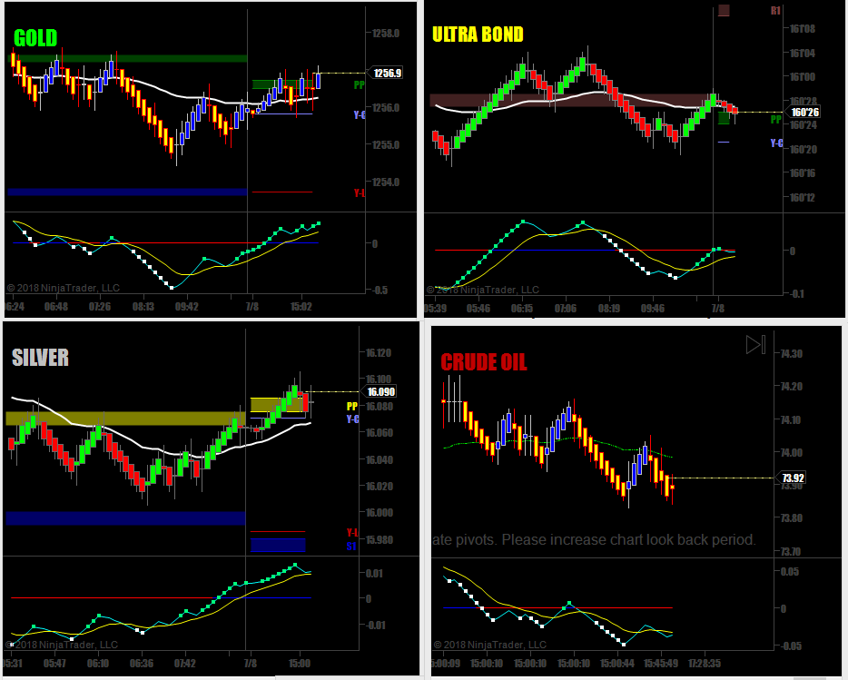
언제나 그렇듯이 크루드오일은 좌충우돌 ..(접근금지) Of course !!
다른 선물들도 큰 뉴스거리가 없는 바람에 다들 조용함
이런날은 크게 욕심부리지 않고 짧은 한마디 따먹고 나와야 함
세번째 확인사항 - 큰그림으로 보는 현재 구리선물의 위치는?
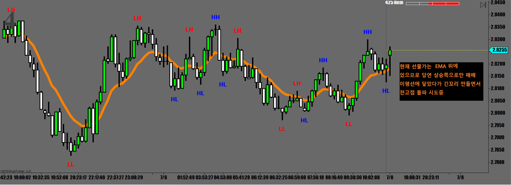
현재 위치는 12일 이평선 위에 올라탔으므로 깨고 내려오기전까지는 무적권 상승방향으로만 매매.
자 이제 커피 한 잔 마시고 시작 !!
장 오픈하고 밀렸다가 오늘의 메인 피봇에서 멋지게 지지받고 반등했을 때 들어갔어야 되는데 밥먹다가 놓침...
일단 어제 종가를 뚫고 올라탔다가 지지받는거 보고 들어가면 됨.목표는 어제 고점임
매매할 때 좋은 기회를 놓쳤다고 딴짓하면 안됨
다음 기회가 곧 찾아옴
매매시작
들어가야 할 챤스가 오면 무조건 마켓오더로 치고 들어가서 포지션을 잡아야 함
좋은 가격에 사보겠다고 아래쪽에 매수 주문 넣고 기다려봐야 그냥 가버림
특히 주문량이 많을 떄는 절반 정도 사고는 그냥 올라가버림
오늘은 산동반점팀들이 전부 놀러갔는지 더위 먹었는지 아무도 안들어옴
장이 썰렁..
덕분에 마켓 오더로 던졌는데 Slippage가 장난 아님
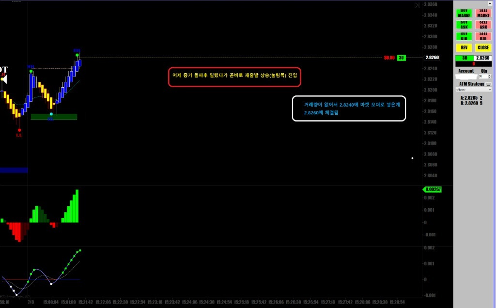
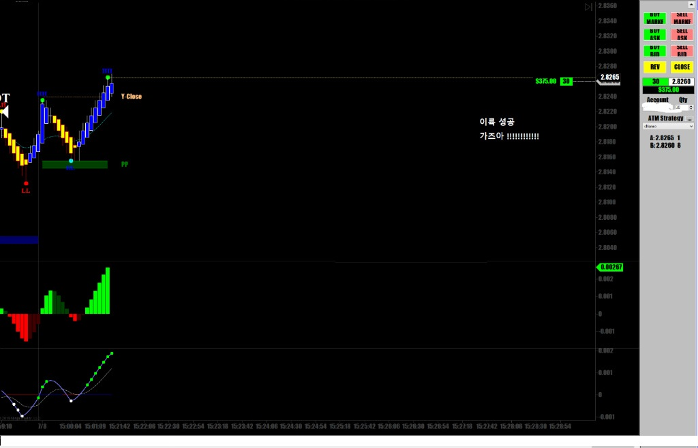
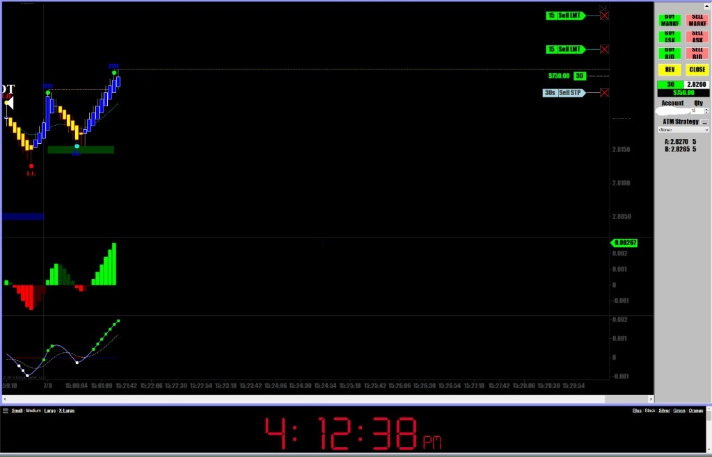
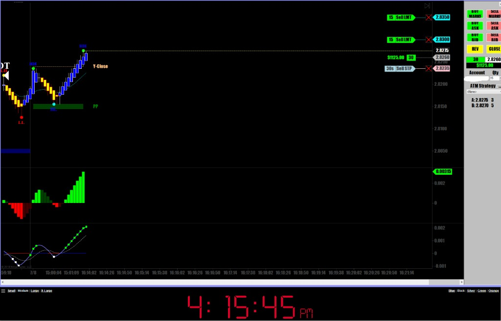
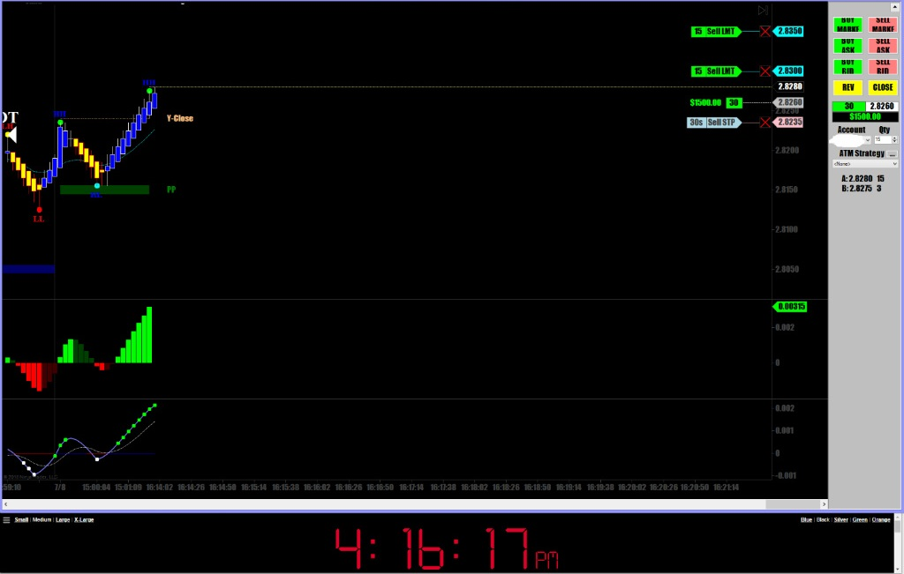
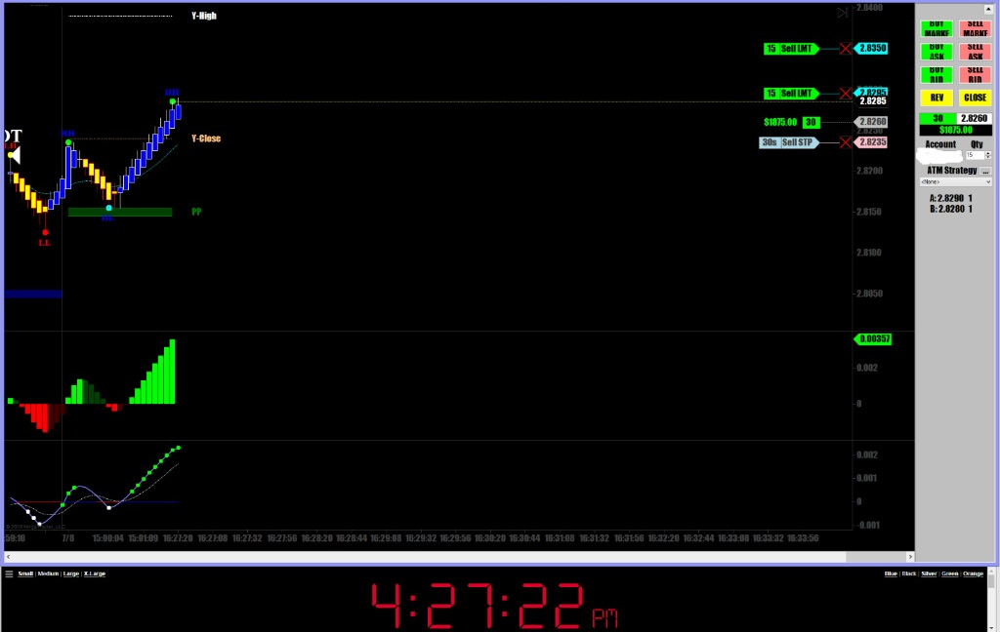
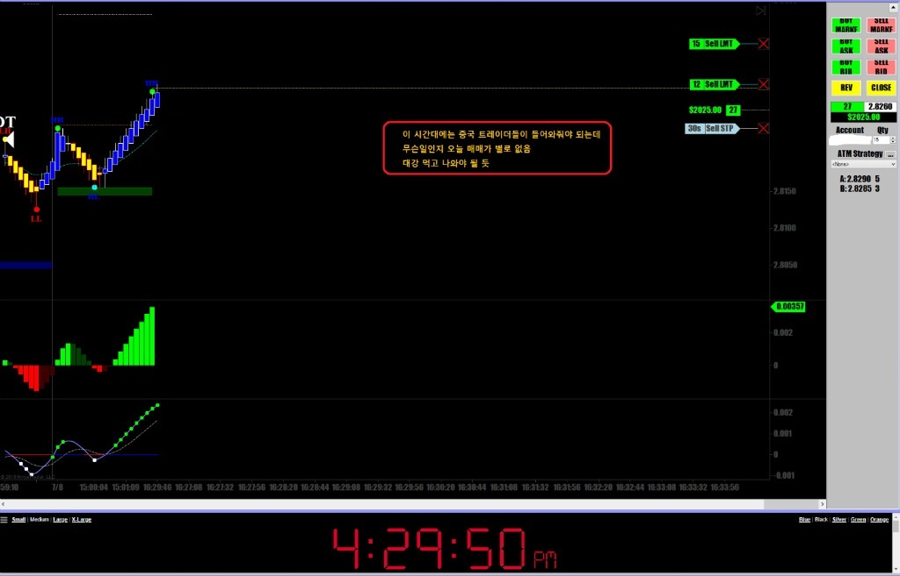
장이 너무 안움직이고 거래량이 없어서 적게 먹고 그냥 나옴
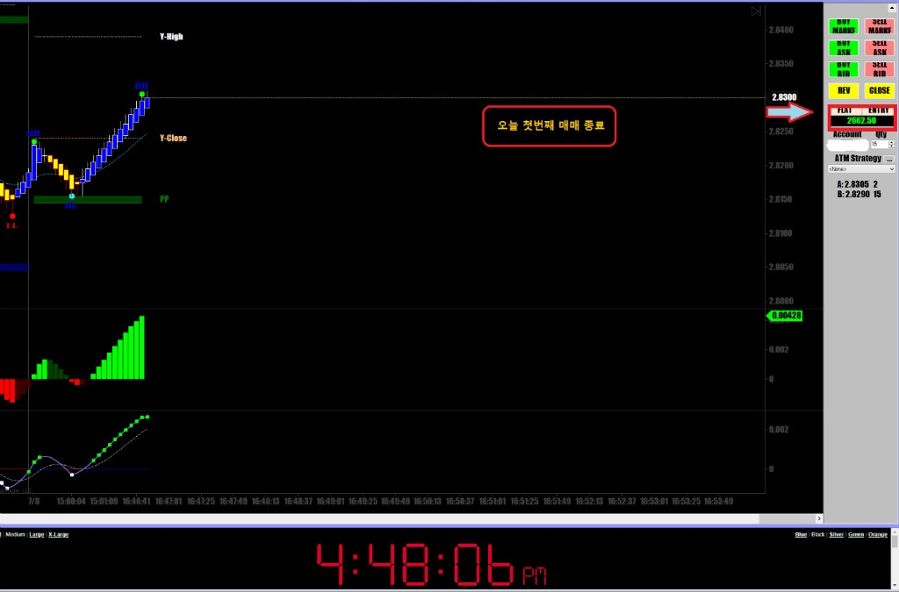
이번주 첫 매매는 그럭저럭 인건비는 나왔음
한 30분 매매해서 $2,662 수익
주말에 큰 뉴스가 터지면 일요일 오후3시 장 오픈하자마자 선물 시장이 요동을 침
그런날은 챤스기 때문에 크게 먹어야 함
쫄지말고 도찌께끼 ~~~
선물시장은 항상 크게 출렁거리지 않기 때문에 벌 수 있을 때 많이 벌어야 함
어떤날은 꼼짝도 안할 때가 많음
이제 조금 쉬었다가 상하이마켓 오픈하는 여기시간 오후6시에 다시 붙을 예정임